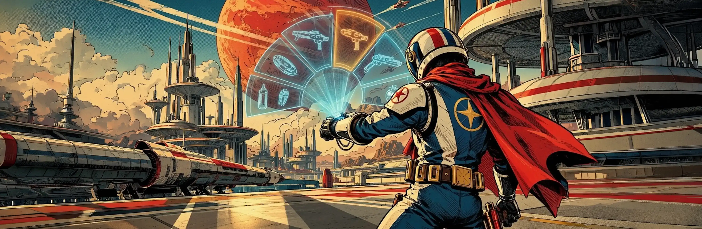
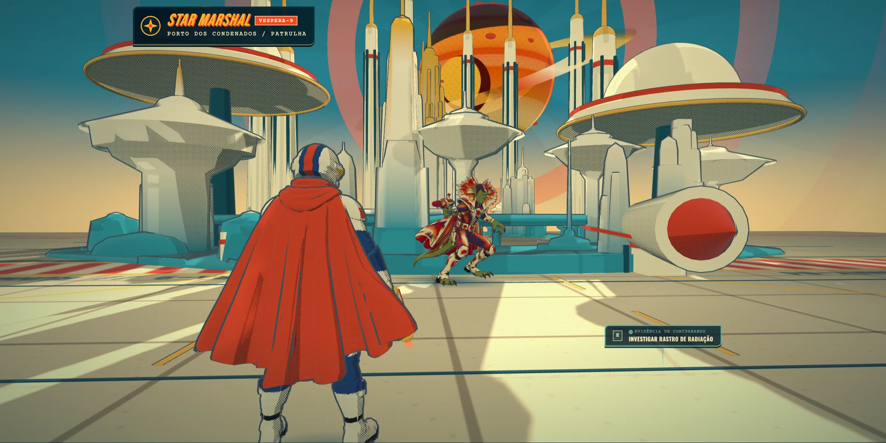
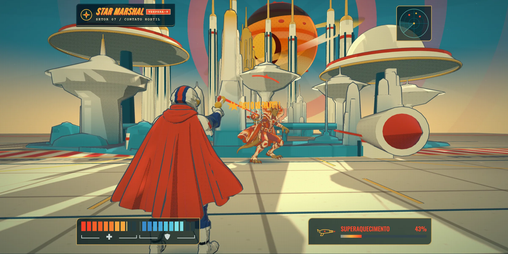
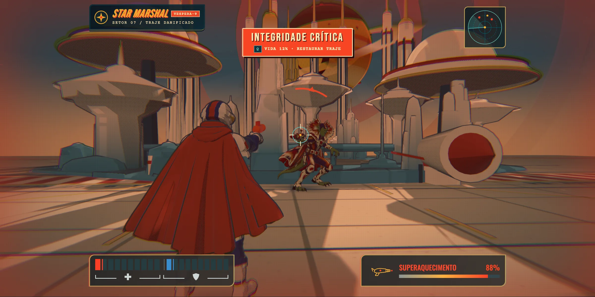
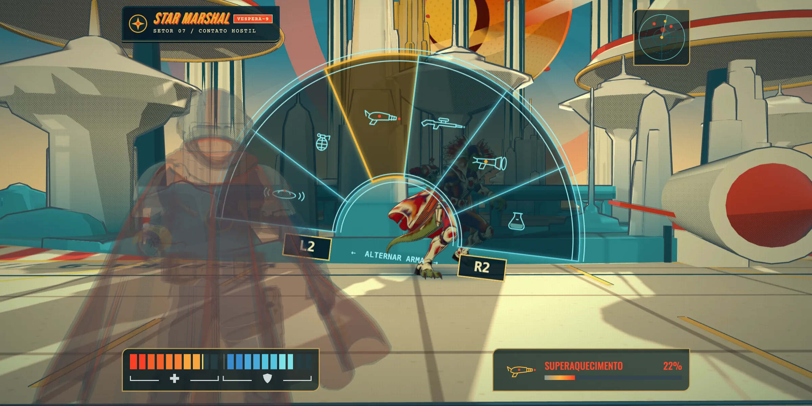
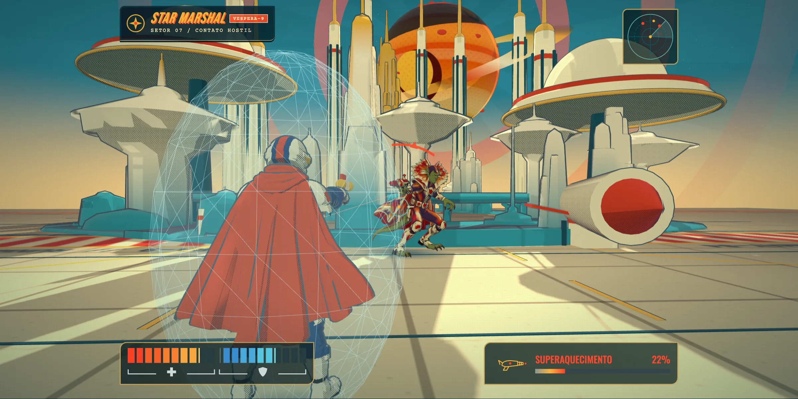

Mostrar quando importa.
Na patrulha, a cidade ocupa a tela. Sob ameaça, vida, escudo, mira e calor da arma entram juntos. Na beira da morte, o alarme toma as bordas e deixa o centro livre para mirar.
Case 15 · Game UI / UX · Direção de arte · Protótipo jogável
Um sistema de HUD para ação em terceira pessoa que muda de prioridade com a situação: some na patrulha, entra no combate e toma as bordas da tela quando a vida acaba. Os prompts acompanham o controle em uso e as armas se projetam do pulso do personagem, dentro da cena. Tudo jogável no navegador.
Jogar o protótipo
Arte conceitual do seletor de pulso, não uma captura do protótipo. Vespera-9 e o Star Marshal são um universo fictício.
01 · A intenção
Em jogos de ação, o HUD disputa a tela com tudo o que o estúdio construiu. A proposta aqui é mostrar cada informação só quando ela muda uma decisão do jogador, e colocar o resto dentro do mundo.
Na patrulha, a cidade ocupa a tela. Sob ameaça, vida, escudo, mira e calor da arma entram juntos. Na beira da morte, o alarme toma as bordas e deixa o centro livre para mirar.
O seletor pertence ao traje, o campo de força pertence ao corpo, o prompt pertence à evidência. Cada indicador fica perto do objeto a que se refere.
O jogador não escolhe a família de ícones num menu: o último dispositivo tocado decide. O seletor de armas abre no próprio braço, sem tela de seleção por cima do jogo.
02 · HUD contextual
Compare o que aparece, o que some e o que ganha destaque. As imagens são capturas do protótipo; os números vêm de medições feitas nele.



A paisagem é a protagonista.
Projetado para quando não há hostis por perto; no protótipo, dura até o primeiro tiro, o primeiro ataque inimigo ou o atalho 1. Vida, escudo, arma, radar e mira saem de cena e deixam de receber foco do teclado.
A informação acompanha a ameaça.
Entra quando o jogador atira ou leva o primeiro tiro (ou pelo atalho 2). Os instrumentos ficam nas bordas, numa faixa central de 1120 px, e o meio da tela fica para a mira e o alvo.
A urgência ocupa as bordas.
Entra quando um ataque deixa a vida abaixo de 15% (ou pelo atalho 3). A cor nunca é o único sinal: o alerta tem texto. Com "reduzir movimento", a vinheta fica fixa.
03 · Ergonomia de controle
O último dispositivo usado decide os ícones. Pegue um controle ou mexa no teclado e no mouse: os prompts abaixo trocam sozinhos. Também dá para escolher a família manualmente.
| Ação | PlayStation | Xbox | Teclado e mouse |
|---|---|---|---|
| Investigar | ✕ | A | E |
| Resfriar e recarregar | ▢ | X | R |
| Abrir / fechar o seletor de pulso | △ | Y | V |
| Restaurar traje / fechar o seletor | ◯ | B | Q · Esc |
| Trocar e equipar no seletor | L2 / R2 | LT / RT | ← / → |
| Atirar (seletor fechado) | R2 | RT | Clique |
| Andar / mirar | Analógicos | Analógicos | WASD · mouse |
04 · Escolha sob pressão
A preocupação aqui foi integrar o design de forma diegética: em vez de um menu sobreposto ao jogo, o seletor é um holograma projetado do bracelete no pulso do personagem. V, △ ou Y ergue o antebraço e abre as seis armas num semicírculo; L2 e R2 trocam e equipam na hora, e o inimigo continua visível através da projeção.

△ abre · L2 / R2 troca e equipa · △ / ◯ fecha
05 · UI diegética e espacial
Latão, mostradores e luz de tubo dão à tecnologia uma linguagem própria. O seletor sai do bracelete, a defesa aparece em volta do corpo e o prompt de evidência fica preso a um ponto do mundo 3D.

06 · Protótipo jogável
Ande, mire, atire, resfrie a arma e troque de arma pelo pulso enquanto o inimigo dispara a cada 10 segundos. Os estados mudam pelo jogo ou pelos atalhos 1, 2 e 3. Funciona com teclado e mouse ou com um controle.
Three.js com modelos OBJ e pintura procedural. Clique na cena antes de usar o teclado; V ou Esc fecha o seletor de pulso. Fora da tela, a cena pausa.